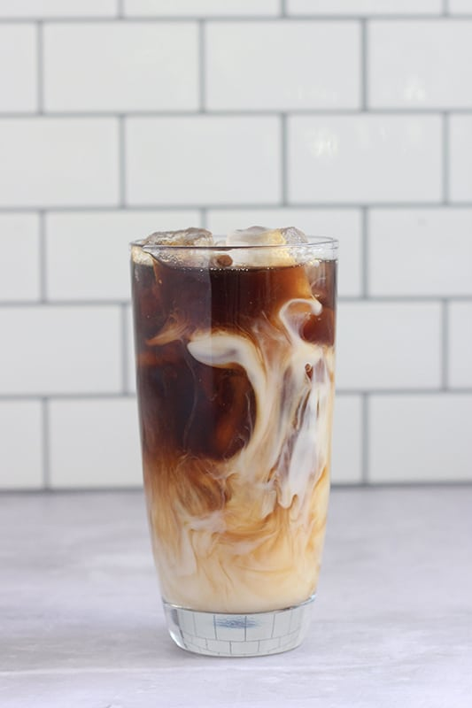
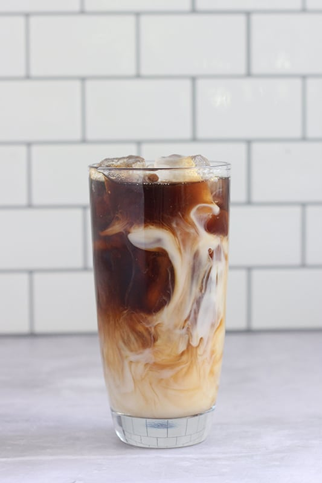
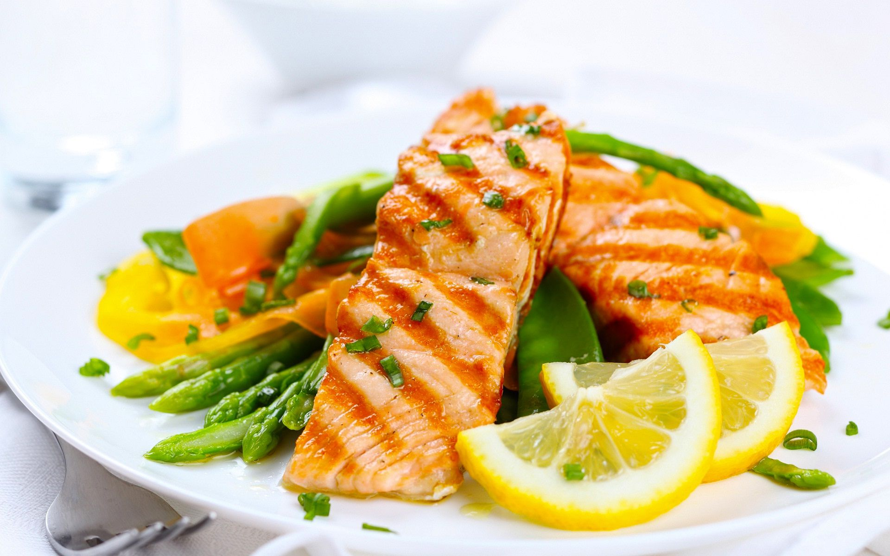
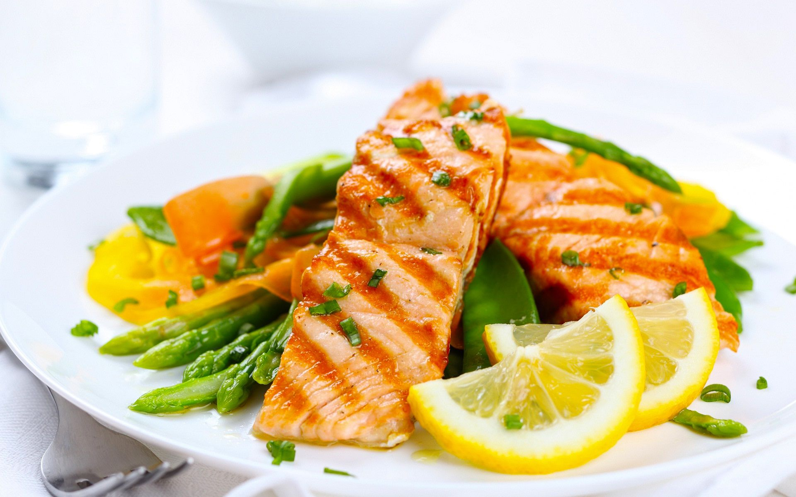

- Welcome to Crioni Cafe!-
Established in 2009, we are a small cafe located in New York 361 Willow Drive in Brooklyn .
At Crioni Cafe you will find flavourful drinks and deliciou food prepared fresh daily. Everything we serve from breakfast to our sandwiches, desserts, drinks & more are made to order using only the freshest, highest quality ingredients. Many of our authentic recipes are inspired from the American food compined with unique spices and bold flavors that you can taste in every bite. We serve cold and hot drinks that mix together the strong flavours of Vietnamese coffee, fresh notes of fruits and tastes of chocolate and milk. Our casual atmosphere casual, yet upscale atmosphere makes Crioni perfect for dining with friends, family, clients and business associates. Due to our fast service Crioni is also a perfect place to grab your breakfast and coffee when you are in a hurry to work or school. Our friendly staff would make the start of your day smooth and pleasant. Atmosphere, quality food, friendly staff and attentiveand really fast service are what we have become known for and keeps our customers coming back and back again.
We look forward to serving you!
 

 
